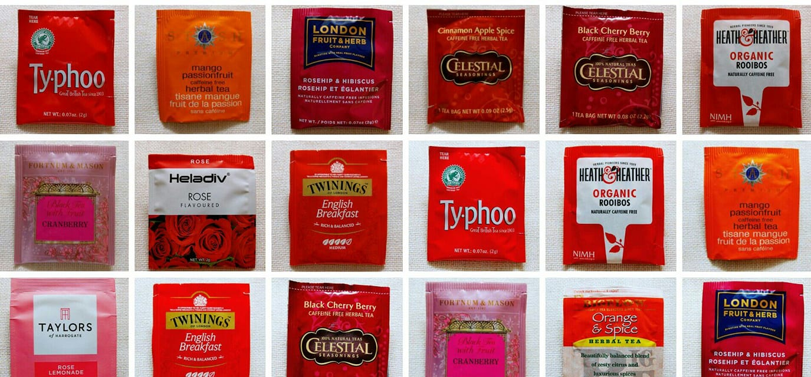

冷泡茶，適用所有茶葉的冷泡教學與解答
解決所有關於冷泡茶的相關問題！
「冷泡茶」與「熱泡茶」都是屬於泡茶方法的一種，兩者間差異在於「泡茶水溫」
「泡茶水溫」的高低，直接影響了浸泡時間的長短
也影響最終茶湯在滋味與口感上的表現

茶怎麼泡才好喝？
原來專家也會用，辦公室的懶人泡茶法
在辦公室想泡杯茶喝，一不小心就又苦又澀嗎？
泡茶方法百百種，行家說的頭頭是道，但對「新茶世代」來說，到底怎樣才能輕鬆快速地的享受一杯好茶呢？
專家也會用的沖泡小技巧，這篇文章幫助你完成！
當代的十大名茶
你知道可名列臺灣十大經典的知名茶款有些嗎!
臺灣茶品質優秀，耳熟能詳，來自各地產區的地方特色茶，在每個時代都有經典之作，過去在不同時期1950、1970、2000、2020年的幾個時期結點，出現過各類不同的版本
說明台灣最著名的有哪十種特別茶，不只學者出書，也有商人行銷時被拿來說嘴
點出認為在當時市場上出最具代表性的台灣茶會標註出來介紹